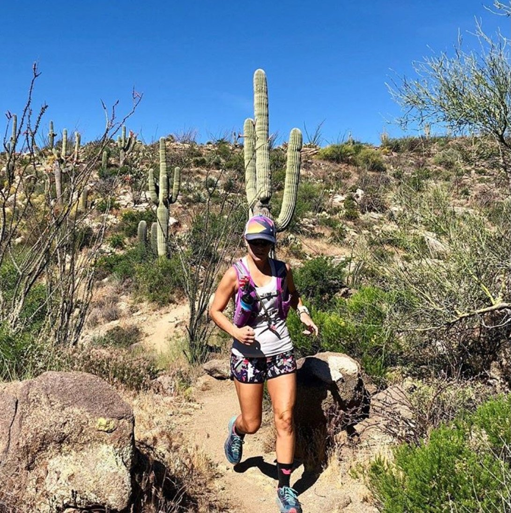
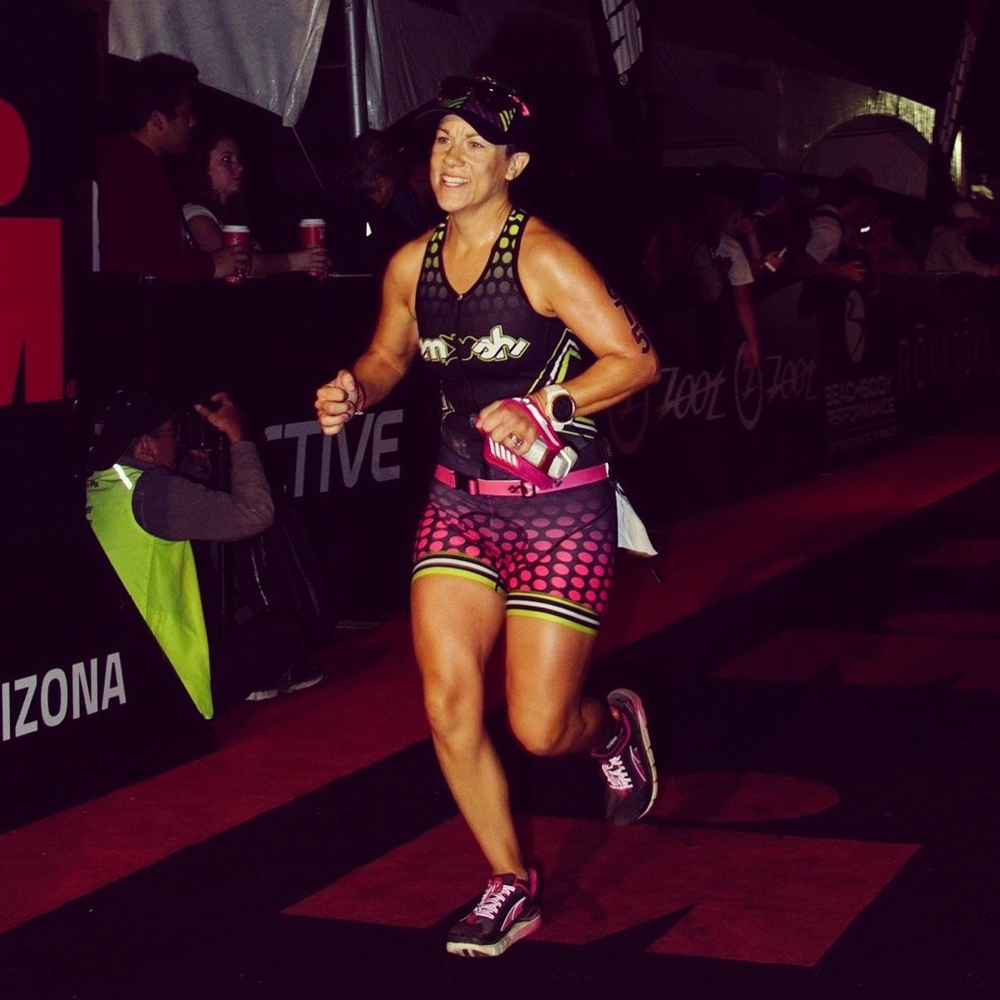

Endurance Athlete + Nature Enthusiast
One of the most defining experiences in my personal journey has been my time as an endurance athlete. Training for and competing in endurance events has taught me invaluable lessons about discipline, resilience, and navigating the unexpected. When you're out on a long course, you can't always predict the challenges; unexpected weather, fatigue, or an unforeseen obstacle but you learn to adapt, stay focused, and push forward toward the finish line.
This mindset has significantly shaped how I approach my professional career. Handling tight deadlines, managing shifting priorities, or overcoming unforeseen challenges in a project feels a lot like navigating a racecourse. I've learned to stay calm under pressure, pivot when necessary, and always find a way to cross the finish line, whether that means collaborating more effectively with my team or putting in the extra effort to ensure success. Endurance sports have instilled in me the belief that success isn't about avoiding challenges; it's about rising to meet them head-on. This perspective has not only driven my career forward but has also fueled my passion for tackling ambitious goals and delivering results.

